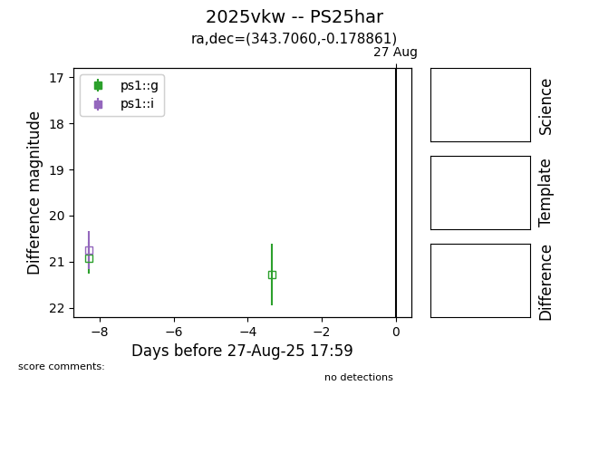

Target 2025vkw at 2025-08-27 17:59, see:
TNS: wis-tns.org/object/2025vkw
YSE: ziggy.ucolick.org/yse/transient_detail/2025vkw
alt names
2025vkw (yse,tns)
PS25har (panstarrs)
coordinates:
equatorial (ra, dec) = (343.7060,-0.17886)
galactic (l, b) = (71.9996,-51.13824)
photometry
